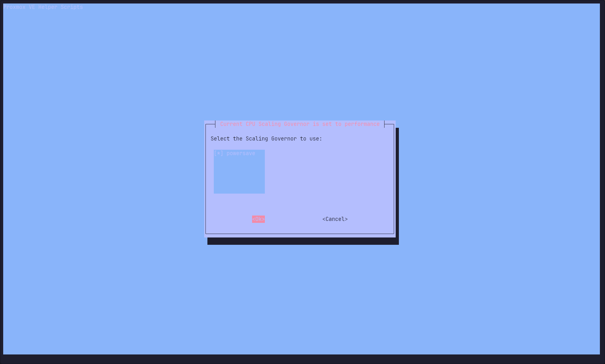
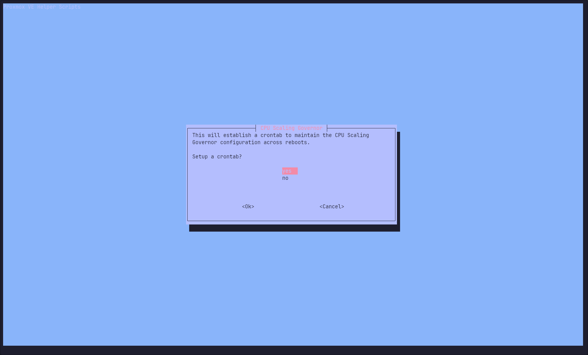
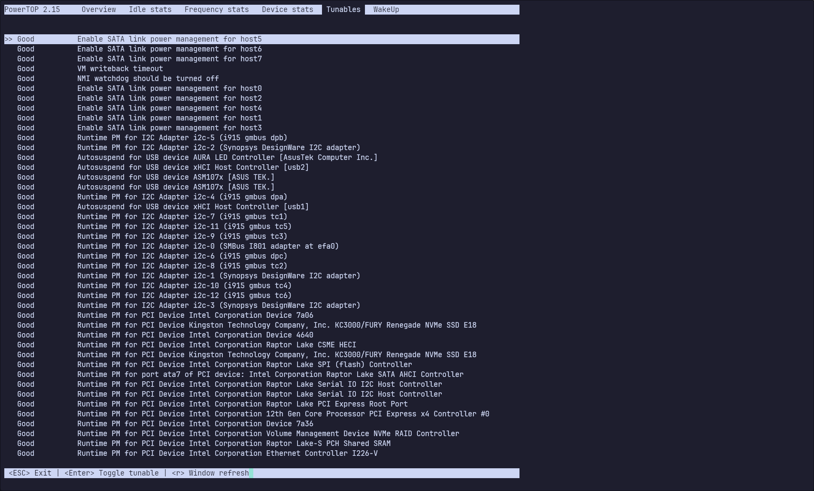
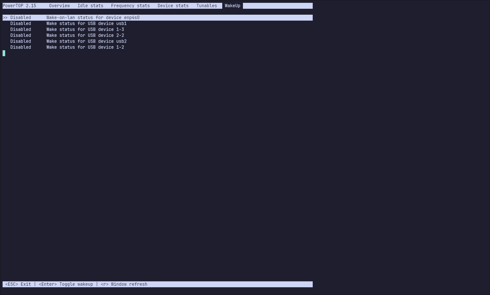
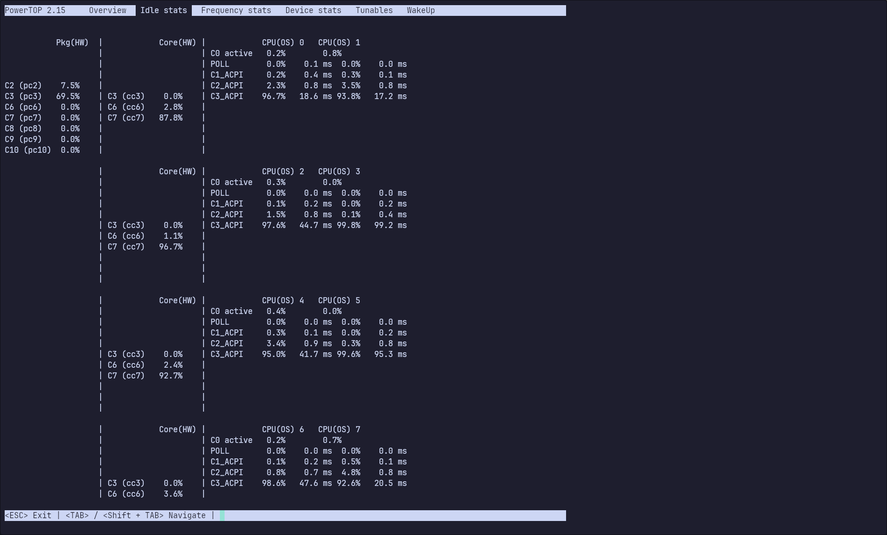

New homelab 2024
My homelab was getting old so this black friday I decided to order some new parts. The purpose of this write up is to document the steps I took to set it up and how to reproduce it.
This write up is coupled with a github repo containing all ansible, terraform, nixos and docker code.
Hardware
My requirements for the homelab were:
- Smallish form factor.
- Fit minimum of 4 HDD:s.
- Be able to run containers and virtual machines for home automation, dns, backups and reverse proxy 24/7.
- Be able to run network labs when needed.
- A chassis that fit a ATX power supply.
- A option to in the future install a GPU for LLMs.
- Reasonable power usage.
These are the parts I ordered:
The build was easy but I regret not getting a smaller PSU. The Node 304 fit the ATX PSU without any issues but a SFX PSU would probably make the cable management easier and it would be easier to fit a full size GPU in the future.
Proxmox installation
Create a bootable USB. I used a previously set up Ventoy stick to which i added the latest proxmox ISO.
Boot from the USB and follow the installation guide. I choose to create a ZFS Raid1 mirror using the two NVME hard drives for Proxmox and VMs.
After the installation is complete run the Proxmox VE Post Install helperscript.
Description from the Proxmox Helperscript website:
This script provides options for managing Proxmox VE repositories, including disabling the Enterprise Repo, adding or correcting PVE sources, enabling the No-Subscription Repo, adding the test Repo, disabling the subscription nag, updating Proxmox VE, and rebooting the system.
Run below as root on the proxmox server.
bash -c "$(wget -qLO - https://github.com/community-scripts/ProxmoxVE/raw/main/misc/post-pve-install.sh)"
In the future i might try to create a ansible role that does the same thing since it isn't exactly best practice to run a shell script as root from an external source.
Power consumption
BIOS
Update the BIOS by downloading the latest version from the Asus website, unzip it and transfer it to an empty USB stick. After that boot in to BIOS, find the BIOS update utility and selected the file that was transferred to the USB stick.
Enable C-states and Native ASPM in BIOS as well as disable all unused onboard devices as Wifi and HDA. I read that disabling turbo would help but I haven't seen that in my short term idle testing so I need to verify that. I also need to document the exact BIOS settings a bit more.
OS Settings
Install powertop, change CPU governor and enable ASPM for all PCI devices.
CPU Scaling Governor
For this I used another script from Proxmox Helperscript.
Description from the Proxmox Helperscript website:
The CPU scaling governor determines how the CPU frequency is adjusted based on the workload, with the goal of either conserving power or improving performance. By scaling the frequency up or down, the operating system can optimize the CPU usage and conserve energy when possible. Generic Scaling Governors
Run below as root on the proxmox server.
bash -c "$(wget -qLO - https://github.com/community-scripts/ProxmoxVE/raw/main/misc/scaling-governor.sh)"
Select the powersaving scaling governor and add the cronjob.  
Powertop
I noticed that powertop in the apt repo was out of date so I had to build it from source since the older version was lacking support for 13th gen CPU:s. Below are the commands to build powertop from source. This could probably also be changed to a ansible script in the future.
apt install git build-essential autoconf-archive ncurses-dev libnl-3-dev libpci-dev pkg-config libtool-bin autopoint gettext libnl-genl-3-dev
git clone https://git.kernel.org/pub/scm/libs/libtrace/libtraceevent.git
cd libtraceevent; make; make install; cd ..;
git clone https://git.kernel.org/pub/scm/libs/libtrace/libtracefs.git
cd libtracefs; make; make install; cd ..;
git clone https://github.com/fenrus75/powertop.git
cd powertop
./autogen.sh
./configure
make install
Running powertop in interactive mode shows what tunables are available and what C states are being achieved by the CPU cores and package.
  
Running powertop --auto-tune will set all tunables to GOOD. To make the tweaks persistent create a systemd service to run powertop --auto-tune at each boot.
nano /etc/systemd/system/powertop.service
Add below to that file.
[Unit]
Description=Powertop tunings
[Service]
Type=oneshot
RemainAfterExit=yes
ExecStart=/usr/local/sbin/powertop --auto-tune
[Install]
WantedBy=multi-user.target
Reload systemctl and enable the service.
systemctl daemon-reload
systemctl enable powertop.service
Auto ASPM
Description from the Wikipedia site for ASPM:
Active-state power management (ASPM) is a power management mechanism for PCI Express devices to garner power savings while otherwise in a fully active state.
The Auto ASPM script enables ASPM for all PCIe devices that support it.
Download the Auto ASPM Script and run it.
wget https://raw.githubusercontent.com/notthebee/AutoASPM/refs/heads/main/autoaspm.py
python3 autoaspm.py
00:06.0: Already has ASPM L0sL1 enabled
00:1a.0: Already has ASPM L1 enabled
00:1c.0: Already has ASPM L0sL1 enabled
00:1c.2: Already has ASPM L1 enabled
00:1d.0: Already has ASPM L0sL1 enabled
01:00.0: Already has ASPM L1 enabled
02:00.0: Already has ASPM L1 enabled
04:00.0: Already has ASPM L1 enabled
Like with powertop create a service that runs it at each boot.
nano /etc/systemd/system/autoaspm.service
Add below to that file.
[Unit]
Description=Automatically activate ASPM on all supported devices
[Service]
Type=oneshot
ExecStart=/usr/bin/python3 /root/autoaspm.py
[Install]
WantedBy=multi-user.target
Reload systemctl and enable the service.
systemctl daemon-reload
systemctl enable autoaspm.service
Conclusion
With only the NVME mirror and networking connected i was able to get the server to idle around 18W but if I disconnect the network cable it drops to 13W. I've tried updating to a kernel with newer drivers, disabling WOL, enabling EEE and combed the Internet for firmware patches but nothing seems to make a difference. I also tried to install a separate PCIe network card but it didn't make any difference either. My guess is that it might not be the network card that draws 5W but rather that the cpu package can't get to higher C-states while networking is active.
SSH credentials
Generate SSH keys with the commands below. You will be prompted to set a password for each key, it's recommended to do so. I use one key for github, one for proxmox and one for the rest of my homelab.
ssh-keygen -t ed25519 -C "$(whoami)@proxmox-$(hostname)" -f ~/.ssh/proxmox
ssh-keygen -t ed25519 -C "$(whoami)@homelab-$(hostname)" -f ~/.ssh/homelab
ssh-keygen -t ed25519 -C "$(whoami)@github-$(hostname)" -f ~/.ssh/github
Copy the proxmox public key to trusted hosts of the proxmox server using ssh-copy-id.
ssh-copy-id -i ~/.ssh/proxmox root@10.0.10.10
Edit the SSH config to use the generated key and specify which user to use.
nano ~/.ssh/config
...
Host github.com
HostName github.com
IdentityFile ~/.ssh/github
Host 10.0.10.10
IdentityFile ~/.ssh/proxmox
User root
Host 10.0.10.*
IdentityFile ~/.ssh/homelab
User robin
...
Add the SSH keys to the SSH agent. That way you wont be prompted for the password for each ssh connection until you close the terminal.
eval "$(ssh-agent -s)"
ssh-add ~/.ssh/proxmox
ssh-add ~/.ssh/homelab
ssh-add ~/.ssh/github
Proxmox API credentials
To be able to use Ansible and Terraform to manage Proxmox it's recommended to use API credentials instead of username/password combination. To create those credentials follow the steps bellow logged in as root on the Proxmox server.
Add a user:
pveum user add homelab@pve
Create a role:
pveum role add HomeLab -privs "Datastore.Allocate Datastore.AllocateSpace Datastore.AllocateTemplate Datastore.Audit Pool.Allocate Sys.Audit Sys.Console Sys.Modify SDN.Use VM.Allocate VM.Audit VM.Clone VM.Config.CDROM VM.Config.Cloudinit VM.Config.CPU VM.Config.Disk VM.Config.HWType VM.Config.Memory VM.Config.Network VM.Config.Options VM.Migrate VM.Monitor VM.PowerMgmt User.Modify"
Assign the role to the new user:
pveum aclmod / -user homelab@pve -role HomeLab
Create a authentication token:
pveum user token add homelab@pve iac --privsep=0
Then you will presented with something similar to below, save the full-tokenid and value in a safe place for later.
┌──────────────┬──────────────────────────────────────┐
│ key │ value │
╞══════════════╪══════════════════════════════════════╡
│ full-tokenid │ homelab@pve!iac │
├──────────────┼──────────────────────────────────────┤
│ info │ {"privsep":"0"} │
├──────────────┼──────────────────────────────────────┤
│ value │ 207c9ff1-96f3-44d4-8439-87da57f5fc26 │
└──────────────┴──────────────────────────────────────┘
Github
Get the generated github public key and add it to your github account at Github keys
cat .ssh/github.pub
Configure git
git config --global user.name Ragr3n
git config --global user.email robin@ragren.com
Clone the repository
git clone XXX
Dependencies
The repo contains files and folders required to manage my homelab and to make life easier a nix shell is provided with all dependencies that are needed to run Ansible, Tofu, nixos-rebuild, SOPS and some other utility's.
nix develop
SOPS: Secrets OPerationS
SOPS is a editor that encrypts/decrypts files. One way to use SOPS is to store variables in a yaml file and encrypt the values using a age keypair derived from a SSH key. We can then use the variables in Ansible, Tofu and NixOS and store our secret variables in git.
Create a folder to store age keys in and use the previously generated SSH key to create age keypair.
mkdir -p ~/.config/sops/age/
nix run nixpkgs#ssh-to-age -- -private-key -i ~/.ssh/homelab > ~/.config/sops/age/keys.txt
nix shell nixpkgs#age -c age-keygen -y ~/.config/sops/age/keys.txt
age1gwmxg9kqrkfqek4lkkv0l70tsjlvftj4jrevu6a8pf0m34smp43qc27wys
Copy the age key that is shown in the terminal and add it to the .sops.yaml file located in the root of the project. If the file doesn't exist create it with this content and change the age key to the one you generated.
keys:
- &primary age1gwmxg9kqrkfqek4lkkv0l70tsjlvftj4jrevu6a8pf0m34smp43qc27wys
creation_rules:
- path_regex: secrets/[^/]+\.(yaml|json|env|ini)$
#- path_regex: secrets/secrets.yaml$
key_groups:
- age:
- *primary
I've saved the clear text version of the secrets/secrets.yaml file in bitwarden but it's also possible to just take the content of secrets/secrets.yaml remove the sops: array and edit the variables since the variable names are stored in clear text. Then use below command to encrypt the file.
sops -i -e secrets/secrets.yaml
Be careful to not commit the file without first encrypting it. Use the VSCode extension @signageos/vscode-sops to easily edit SOPS encrypted files and automatically encrypt them.
Templates
I've created a couple of ansible roles to deploy VM and LXC templates to proxmox, this is how to use them.
Change in to the Ansible directory, edit the inventory/proxmox.yaml file and run one or more playbooks to generate VM or LXC templates in Proxmox.
hl-ansible #Alias for cd *homelabdir*/ansible
code inventory/proxmox.yml
ansible-playbook create-template-nixos-vm.yml -i inventory/proxmox.yml
ansible-playbook create-template-nixos-lxc.yml -i inventory/proxmox.yml
ansible-playbook create-template-hassos-vm.ymlt -i inventory/proxmox.yml
OpenTofu
OpenTofu is a opensource fork of terraform that makes it possible to define infrastructure as code.
I've chosen to keep the provider config in the main.tf file and separate pve-****-.tf files for each deployed node. This way I can easily edit, create new or destroy nodes without affecting others.
Change in to the tofu directory, copy and or edit tofu files as desired.
hl-tofu #Alias for cd *homelabdir*/tofu
code main.tf
cp pve-vm-nixos-01.tf pve-vm-nixos-02.tf
code pve-vm-nixos-02.tf
Plan the config and make sure it looks alright and then apply it.
tofu plan
# Output removed
tofu apply
data.sops_file.secrets: Reading...
data.sops_file.secrets: Read complete after 0s [id=-]
OpenTofu used the selected providers to generate the following execution plan. Resource actions are indicated with the following symbols:
+ create
OpenTofu will perform the following actions:
# proxmox_virtual_environment_vm.vm-nixos-02 will be created
+ resource "proxmox_virtual_environment_vm" "vm-nixos-02" {
+ acpi = true
+ bios = "seabios"
+ id = (known after apply)
+ ipv4_addresses = (known after apply)
# Output abbreviated
}
Plan: 1 to add, 0 to change, 0 to destroy.
Do you want to perform these actions?
OpenTofu will perform the actions described above.
Only 'yes' will be accepted to approve.
Enter a value: yes
proxmox_virtual_environment_vm.vm-nixos-02: Creating...
proxmox_virtual_environment_vm.vm-nixos-02: Creation complete after 8s
Adding keys to SOPS
To be able to deploy NixOS configurations that utilizes SOPS secrets to remote servers, the remote servers age key needs to be added to the .sops.yaml file.
To make the process a bit easier i've made a shell script (update-age) that takes an IP as input and then adds the public ssh key to known_hosts, adds the key to .sops.yaml and updates encryption keys for secrets/secrets.yaml
update-age
IP-address: 10.0.10.30
Syncing keys for file ./secrets/secrets.yaml
The following changes will be made to the file's groups:
Group 1
age1gwmxg9kqrkfqek4lkkv0l70tsjlvftj4jrevu6a8pf0m34smp43qc27wys
+++ age1gwmxg9kqrkfqek4lkkv0l70tsjlvftj4jrevu6a8pf0m34smp43qc27hek
NixOS
NixosConfigurations created in the flake.nix can be deployed by using nixos-rebuild and specifying --target-host
hl-root #Alias for cd *homelabdir*
nixos-rebuild switch --flake .#vm-nixos-01 --target-host 10.0.10.30 --use-remote-sudo
nixos-rebuild switch --flake .#lxc-nixos-01 --target-host 10.0.10.31 --use-remote-sudo
Reboot
It is probably a good idea to reboot the newly created LXC:s or VM:s once after creation and initial deploy. That can be accomplished by this one liner.
ssh 10.0.10.30 "sudo reboot"
ssh 10.0.10.31 "sudo reboot"